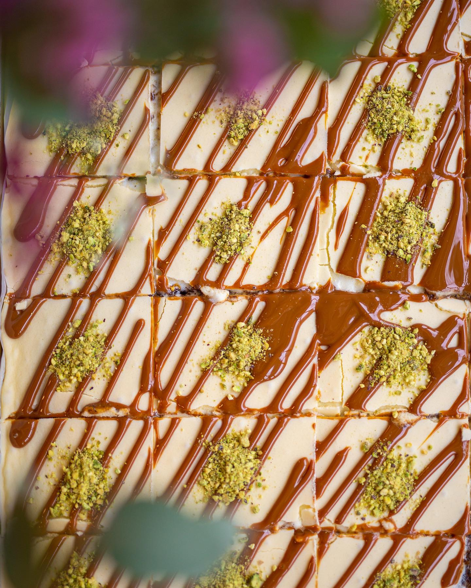

Orechové rezy podľa @kuskolace — Normy Jedál
Orechové rezy so žĺtkovou polevou, toto je koláč, ktorý robila babka v nedeľu k “turkovi do skla”😁 štavnatý korpus z vlašských orechov, preliaty kávou a rumom, cukrovo žĺtková poleva so sladkým karamelom a orieškami (to už babka nedávala, ale pridali sme navyše my😆). Retro a nostalgia🤍•
•
•
Wallnut coffee cake with egg yolk glaze, just like grandma used to bake every Sunday. Super old school, but soo delicious!☺️•
•
📸 @bitinghanah
#orechoverezy #zltkoverezy #piatok #weekend #vikend #dnespeciem #retro #praha #kuskolace #kuskolacepraha #karamel #pistacie #friyay #ftw